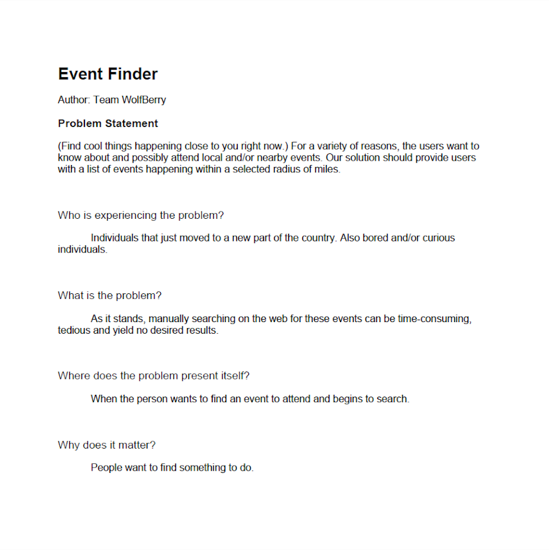

Problem Statement: Event Finder
(Find cool things happening close to you right now.) For a variety of reasons, the users want to know about and possibly attend local and/or nearby events. Our solution should provide users with a list of events happening within a selected radius of miles.
Affinity Diagram: Event Finder

My group and I worked together to brainstrom all things regarding event finding.
Personna: 2 Personnas for Event Finder App

2 personnas of a typical event finder app user.
Storyboard: 3 Storyboards for Event Finder App

Three storyboards for possible users of the Event Finder app.
Sketches: Event Finder App

Sketches of potential app solutions for Event Finder App.
Paper Prototype: Event Finder App

A functional prototype on paper which can be used to describe the app.
Usability Testing: Event Finder App

A scenario and tasks which shows what users are thinking of the app.
Low-Fi Prototype: Event Finder App

A low fedelity prototype.
Low-Fi Prototype: Event Finder App

A high fidelity prototype.